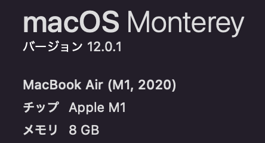
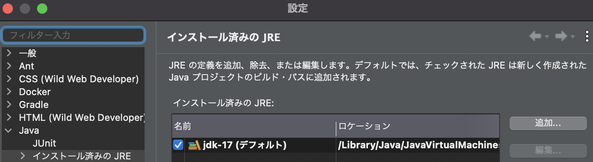

2. Javaとは¶
2022年のJavaまるわかり！最新バージョンからJavaを取り巻く環境まで qiiita
2.1. JDKとは¶
2.2. JREとは¶
3. 環境構築手順¶
3.1. Javaのインストール¶
3.1.1. MACのバージョン確認¶
Macの場合、M1かInterlの確認をしてからDLする必要がある。
Macの「このMacについて」からチップを確認する。
M1の場合：
Arm 64DMG Installerを選択Intelの場合：
x64DMG Installerを選択
DL後は展開して、承認すれば、インストール完了

3.1.2. Javaのバージョン確認¶
現在使われているjavaのバージョン確認
java -version
インストールされているすべてのJavaの確認
/usr/libexec/java_home -V
出力例。バージョンとJavaがインストールされているパスが返却される
Matching Java Virtual Machines (4):
17.0.6 (arm64) "Oracle Corporation" - "Java SE 17.0.6" /Library/Java/JavaVirtualMachines/jdk-17.jdk/Contents/Home
1.8.351.10 (x86_64) "Oracle Corporation" - "Java" /Library/Internet Plug-Ins/JavaAppletPlugin.plugin/Contents/Home
1.8.0_352 (x86_64) "Eclipse Temurin" - "Eclipse Temurin 8" /Library/Java/JavaVirtualMachines/temurin-8.jdk/Contents/Home
1.8.0_351 (x86_64) "Oracle Corporation" - "Java SE 8" /Library/Java/JavaVirtualMachines/jdk1.8.0_351.jdk/Contents/Home
/Library/Java/JavaVirtualMachines/jdk-17.jdk/Contents/Home
3.1.3. Javaのアンインストール¶
javaがインストールされているパスのフォルダを指定することで、環境をアンインストールすることが可能
sudo rm -fr [path_to_jdk]
3.1.4. Javaの切り替え¶
JAVA＿HOMEを設定する。[ver]の部分に切り替えたいjavaのバージョンを入れる
export JAVA_HOME=`/usr/libexec/java_home -v "[ver]"`
パスを通す。
PATH=$JAVA_HOME/bin:$PATH
改めてjavaのバージョンを確認すると、バージョンが変更されている。
3.2. STSのインストール（MAC）¶
3.2.1. STSとは¶
Springの公式ツールでEclipseベースのIDE
3.2.2. インストール¶
3.2.3. STSのVM¶
STS(eclips)はJavaVMというJavaプログラムを実行するソフト内で起動する。
STSが起動すると読み込まれる.iniファイルでvm環境をしている。
自分のPC上のjavaのバージョンとSTSのVMのバージョンを一致させておく必要があるので、注意。
3.2.3.1. iniファイルの確認¶
STSのアプリケーションをcontrolを押しながらクリックするとパッケージの内容を表示が選択できるので選択し、以下のパスを確認する
STS3の場合
Contents/Eclips/STS.ini
STS4の場合
Contents/Eclips/StringToolSuite4.ini
3.2.3.2. 立ち上がっているSTSからvmの確認¶
ウィンドウのSTSから「バージョン情報」を選択「インストール詳細」から「Configuration」を選択
-vmの項目に記載されているのがvmで利用されているjavaのパス

3.2.4. トラブルシューティング¶
3.2.4.1. STS3の環境構築¶
iniファイルにおいて-vmで指定されているパスがvmで利用しているjavaのパス
STS3の場合、Javaのver17をiniファイルで指定すると以下のエラーが出る
-vm
/Library/Java/JavaVirtualMachines/jdk-17.jdk/Contents/Home/bin

Javaのver1.8を指定する場合、M1対応のjdkがないためか、立ち上がっても、うまく開発できない。(stringすらインストールできていないポイ)
-vm
/Library/Java/JavaVirtualMachines/jdk1.8.0_351.jdk/Contents/Home
3.2.4.2. STS4の環境構築¶
iniファイルでは、STS内で指定されているver17のjavaが動いている。
-vm
../Eclipse/plugins/org.eclipse.justj.openjdk.hotspot.jre.full.macosx.x86_64_17.0.5.v20221102-0933/jre/lib/libjli.dylib
なので、PC側のjavaのバージョンもver17とする。
3.2.5. STS内部でjavaバージョンを指定¶
ウィンドウから設定を選択。
ナビゲーションペインから、Java/インストール済みのJREで利用するJREを指定する。

また、ナビゲーションペインからJava/コンパイラーでコンパイルするときのjavaのバージョンを指定する。

3.2.6. STSの特徴¶
STS内部にWebサーバーを含んでいるため、Tomcatの設定などをしなくても、STS内でアプリを実行することができる。
3.2.6.1. jarファイルとwarファイル¶
warファイルの中身は、アプリのみが格納されているため、WebServer(Tomcat)に配置して、実行する必要があった。 jarファイルの中身は、アプリとWebサーバーが格納されているため、jarファイルのみでアプリの実行が可能となる。
3.2.6.2. jarファイルの作成¶
実行/Mavenのインストール
stsプロジェクトのtargetフォルダにjarファイルが作成される。 作成されたjarファイルに対して、実行することでもアプリを立ち上げることができる。
java -jar xxx.jar
3.2.7. ライブラリを追加する¶
pom.xmlに依存関係を追加する
例えばThymeleafを追加したい場合、pomの[dependencies]に以下を追加する
<dependency>
<groupId>org.thymeleaf</groupId>
<artifactId>thymeleaf-spring6</artifactId>
<scope>compile</scope>
</dependency>
追加して、pom.xmlを保存するだけで、Maven依存関係のフォルダに必要なライブラリたちをDLしておいてくれる。
3.3. mavenとは¶
POM(Project Object Model)という考え方に基づいて、プロジェクトのビルド、テスト、ドキュメンテーション、成果物の配備などプロジェクトのライフサイクルを管理するもの。 プロジェクトに関わる情報はPOMに集約する。
3.3.1. インストール¶
インストールできるApach Maveを確認
brew search maven
インストール
brew install maven
動作確認
mvn --version
3.3.2. mavenの各コマンド¶
3.3.2.1. mvn compile¶
src/main/java/配下のソースファイルのコンパイルが行われます。 コンパイルにより作成されたクラスファイルはtarger/classesディレクトリに出力されます。
3.3.2.2. mvn test¶
デフォルてで、以下のパターンにマッチするファイルが実行される
＊＊/Test＊.java
＊＊/＊Test.java
＊＊/＊TestCase.java
3.3.2.3. mvn packege¶
成功すると、targetディレクトリに**.jarファイルが作成される。
作成されるjarファイルの名前はpom.xmlに記述されているartifactIdとversionできまる。